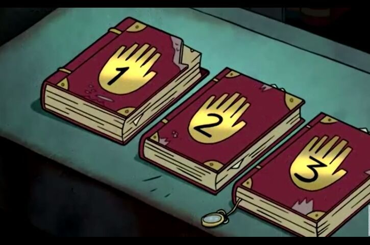
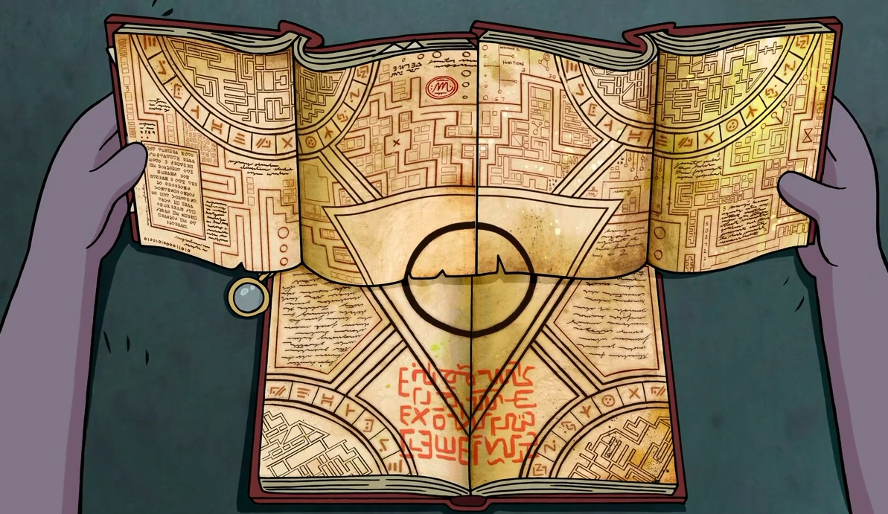
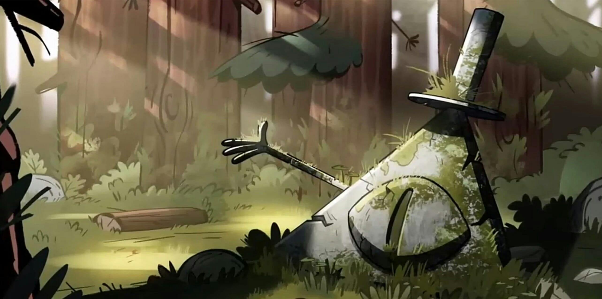
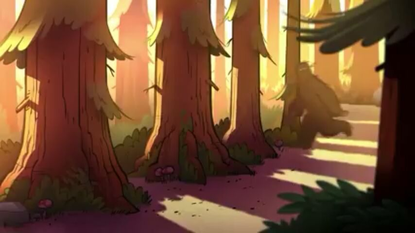
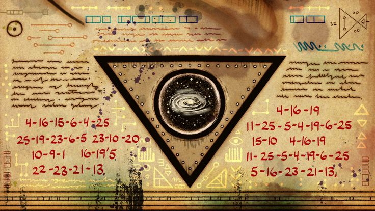
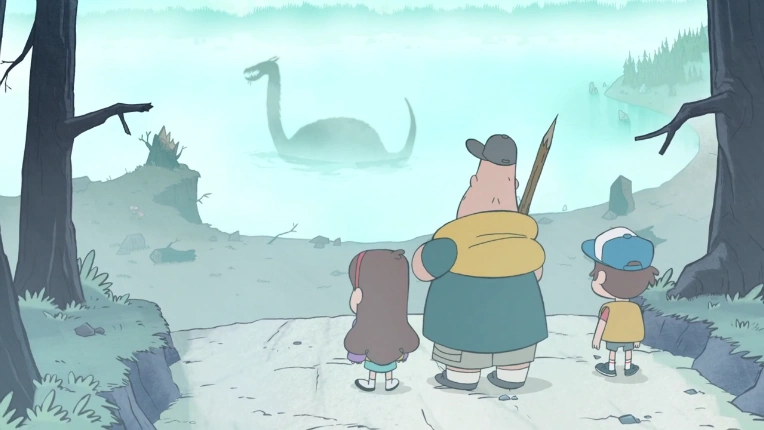
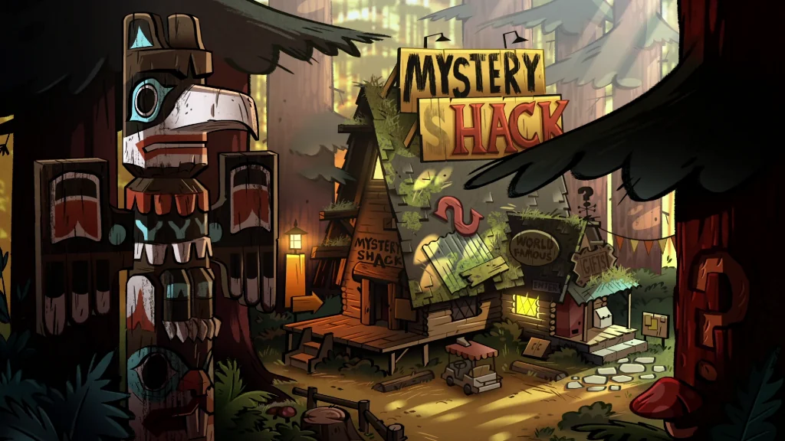
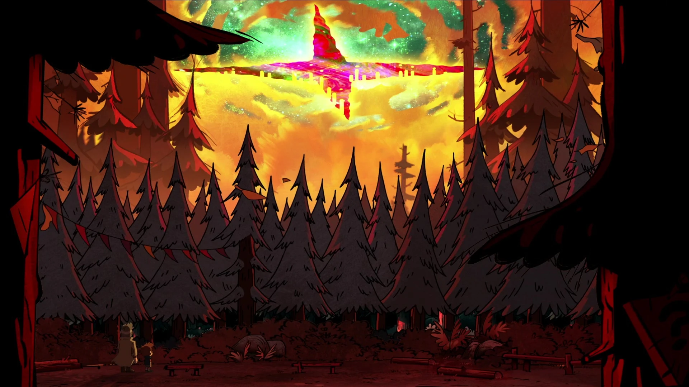

Misterios Famosos
Desde el diario oculto hasta el portal interdimensional, Gravity Falls está repleto de enigmas por resolver.
¿Te atreves a descubrir la verdad?
Los Diarios de Gravity Falls
En el corazón de los misterios de Gravity Falls se encuentran los tres diarios escritos por un autor
desconocido, repletos de observaciones sobre criaturas mágicas, símbolos extraños y artefactos
misteriosos. ¿Quién escribió estos diarios y por qué los escondió?

La Máquina del Portal
Construida en secreto en el sótano de la Mystery Shack, este portal interdimensional fue clave para
descubrir otros mundos. Sin embargo, activarlo trajo consecuencias imprevisibles que casi destruyen la
realidad.

Bill Cipher
El demonio triangular más aterrador de Gravity Falls. Bill Cipher es una entidad interdimensional que
hace pactos a cambio de controlar mentes. Su extraño simbolismo y mensajes ocultos están en todas
partes. ¿Te atreverías a invocarlo?

El Bosque de Gravity Falls
Un lugar lleno de secretos y criaturas mágicas. Desde los traviesos gnomos hasta el unicornio protector,
cada rincón del bosque tiene una historia que contar. Es un espacio donde las reglas del mundo normal
parecen desvanecerse.

El Criptograma del Reloj
A lo largo de la serie, múltiples acertijos y mensajes cifrados aparecen en los créditos finales y en los
decorados. Resolverlos es un reto que solo los más valientes logran completar. Cada clave revela un
nuevo secreto del pueblo.

Los Gobblewonkers del Lago
En las profundidades del lago Gravity Falls, se dice que habita una criatura mecánica conocida como el
Gobblewonker. Creado por un inventor excéntrico, su aparición siempre viene acompañada de relatos
aterradores.

La Maldición del Shack
Algunos dicen que la Mystery Shack está construida sobre un punto de energía mística que atrae eventos
paranormales. Esto podría explicar las numerosas apariciones de fantasmas y actividades inexplicables
dentro y fuera de la cabaña.

El Fin del Mundo (Weirdmageddon)
El evento apocalíptico más temido de Gravity Falls. Cuando Bill Cipher logró cruzar a nuestra dimensión,
todo el pueblo se transformó en un caótico reino de locura. Fue necesario unirse como nunca antes para
restaurar el equilibrio.
